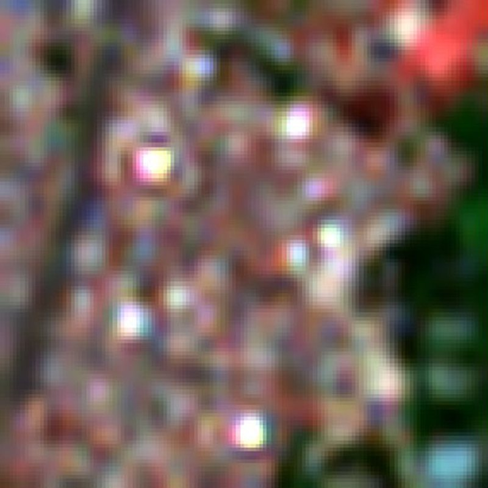
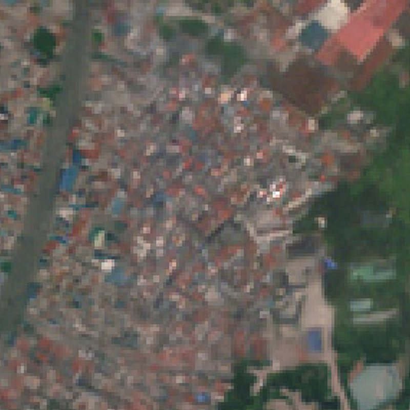

Sentinel‑2, 10 m Sen4x, 2.5 mSen4x: free satellite imagery at 2.5 m
Asian Development Bank, 2024 to now
Sentinel‑2 photographs the whole planet every few days for free, but at 10 m per pixel. That is too coarse for buildings, informal settlements or small farms. Sen4x gets it to 2.5 m.
The first version, published in IEEE JSTARS, fused repeated passes with a prior learned from Pléiades Neo imagery. The follow-up scales it to the whole globe. It fuses eight revisits, then a diffusion transformer adds texture, and each user decides per task how much of that texture to accept.
We judge it by what it does for real mapping tasks. In Manila, a settlement model scores an F1 of 21.5% on Sen4x output against 8.0% on plain Sentinel‑2.
- 1.8M
- training scene pairs
- 123
- countries
- 8
- downstream tasks